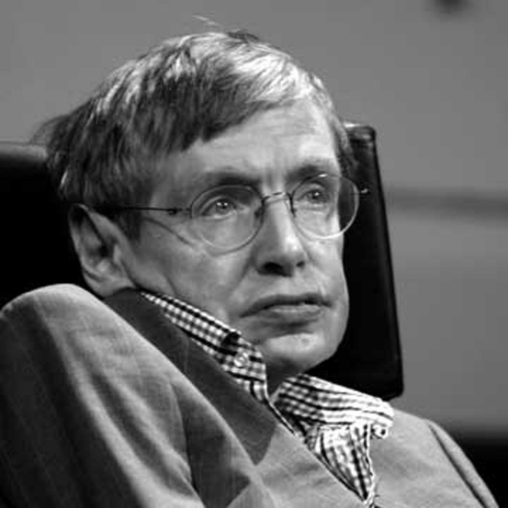

Stephen Hawking
Quick Facts
Also Known As: Stephen William Hawking
Famous As: Theoretical Physicist, Cosmologist
Nationality: British
Birthday: January 8, 1942
Died At Age: 76
Sun Sign: Capricorn
Born In: Oxford
Father: Frank Hawking
Mother: Isobel Hawking
Spouse/Ex-Spouse: Elaine Manson (1995–2006), Jane Wilde (1965–1995)
Founder/Co-Founder:Microsoft Research
Diseases & Disabilities: Quadriplegia
Died On: March 14, 2018